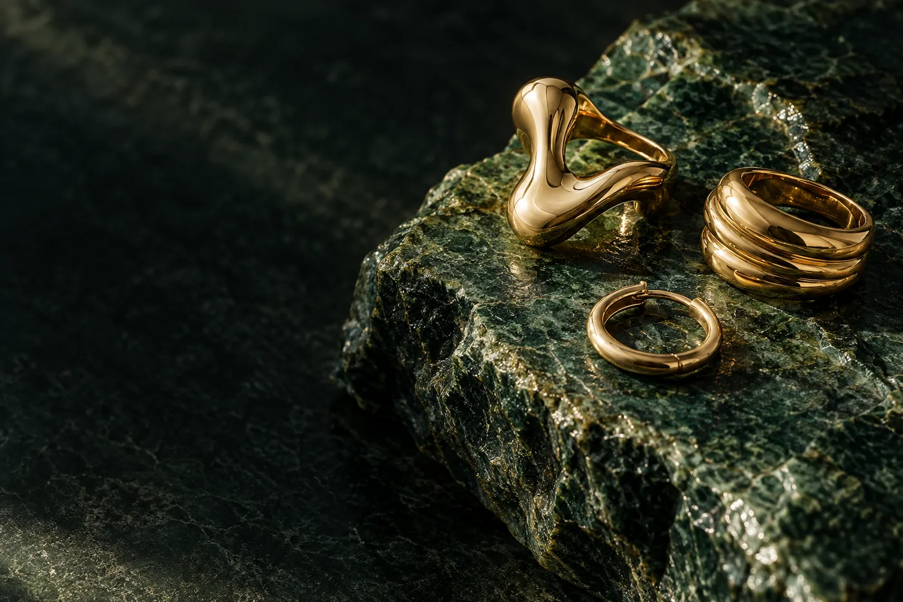
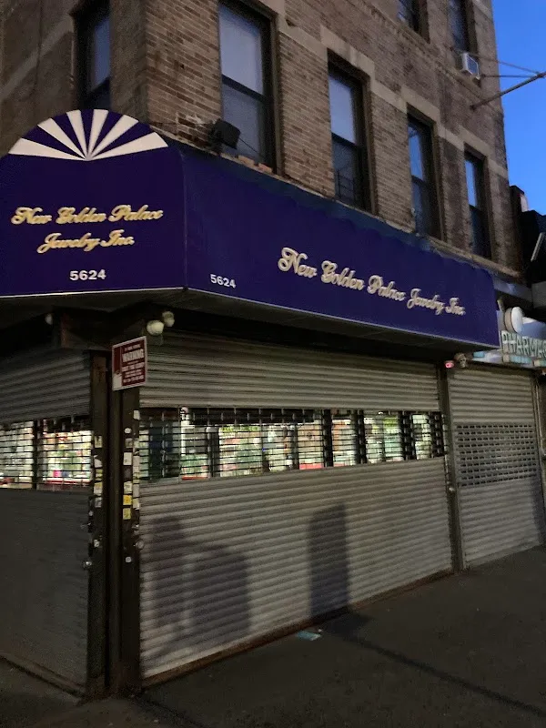

Golden Palace.
The cabinet.
Jewelry in Brooklyn, seen a little closer. Explore a demonstration collection and ask the jeweler about actual pieces.
Open the cabinet →5624 5th Ave, Brooklyn, NY 11220

Find your form
Begin with the shape of the piece, then examine the details in the collection.
A form for the handExplore the ring study and use the detail view to discuss size, design and metal with the jeweler.
Explore rings →Demo selection. Confirm products, prices and availability with the store.
Small objects, closely
Sample forms demonstrate the close view. The jeweler confirms metal, dimensions, price and availability.

The real Golden Palace
Golden Palace Jewelry is at 5624 5th Ave, Brooklyn, NY 11220. Explore the business photographs, then plan a visit or call to ask about the current selection.
Plan your visit →